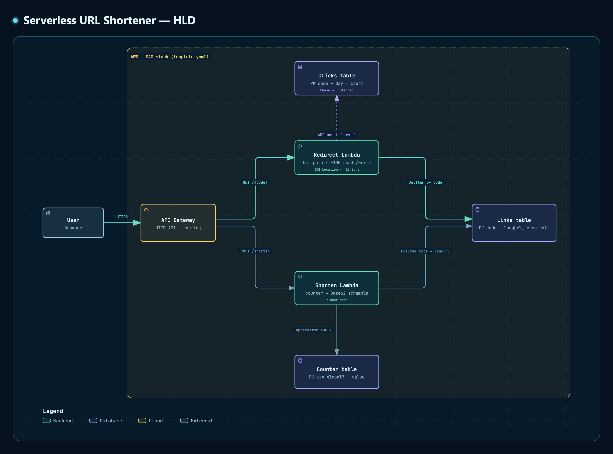

Lesson 1 · Serverless URL Shortener
Reading the HLD
Every box, every arrow, and where each one lives (or doesn't yet) in template.yaml.
template.yaml creates it, and whether it exists yet.
1. What an HLD is
A high-level design (HLD) shows the components of a system and how requests flow between them. It deliberately leaves out code, configuration values and error handling. It answers "what talks to what, and why?" A low-level design or the code itself answers "how exactly?"
Read any architecture diagram in three passes:
- Legend. What do the colours and line styles mean?
- Boundaries. What's inside the system, and what's outside it?
- Flows. Pick one request and follow its arrows from start to finish.

2. Pass one: the legend
| Visual | Means | Boxes |
|---|---|---|
Teal border, </> icon | Backend: code you write | Redirect Lambda, Shorten Lambda |
| Purple border, cylinder icon | Database: where state lives | Links, Counter, Clicks tables |
| Yellow border, cloud icon | Cloud: a managed AWS service you configure but don't code | API Gateway |
| Grey border | External: outside your control | User / Browser |
The printed legend only covers boxes. The arrows follow two conventions that aren't in the legend. They come from the diagram's source file and its labels:
- Bright teal arrows are marked emphasis: they trace the redirect request (
GET), the hot path. The plain grey-blue arrows are the shorten request (POST). - The dashed arrow to Clicks is labelled
(async), and its target box saysPhase 4 · planned. It means "later, and the redirect doesn't wait for it".
3. Pass two: the boundaries
The outer frame is the whole system. Inside it, the yellow dash-dot box is labelled AWS · SAM stack (template.yaml). That label is a precise claim: everything inside this box is created by one file.
When you run sam deploy, SAM turns template.yaml into a CloudFormation stack, a group of AWS resources created, updated and deleted together.The Transform: AWS::Serverless-2016-10-31 line at the top of your template is what makes it a SAM template. SAM expands its short resource types into plain CloudFormation. Delete the stack and every box inside the yellow line disappears. That's the main payoff of Infrastructure as Code: the architecture is reproducible from a text file.
The User sits outside the yellow line. You don't deploy browsers. The HTTPS label on its arrow is a reminder that the request crosses the public internet, encrypted, before it reaches anything you own.
4. Every box, mapped to your template
This is the most important table in the lesson. Open template.yaml next to it.
| Box | What it does | In template.yaml | Status |
|---|---|---|---|
| User Browser |
Sends POST /shorten to create a link and GET /{code} to follow one. |
Nothing (external) | n/a |
| API Gateway HTTP API · routing |
The public front door. It matches method + path to a route and invokes the Lambda attached to that route. This is the job app.get(...) does in Express. |
No resource block of its own. SAM creates it for you from the Events: … Type: HttpApi section inside your function. |
exists (implicit) |
| Shorten Lambda counter → Base62 scramble · 7-char code |
Gets a unique number from Counter, scrambles it into a 7-character Base62 code, saves code → longUrl in Links. |
The resource you named LambdaHandler, code in src/shorten/. |
wired, logic not yet |
| Redirect Lambda hot path · ~100 reads/write · 302 Location · 410 Gone |
Looks up the code in Links and answers with a 302 whose Location header is the long URL. |
Not there yet. src/redirect/ is an empty folder. |
Step 4 |
| Links table PK code · longUrl, createdAt |
The core mapping. One item per short link. | LinksTable, key code (type S = string) |
exists |
| Counter table PK id="global" · value |
Holds a single item whose value only goes up. It's the source of unique numbers. |
CounterTable, key id |
exists |
| Clicks table PK code + day · count · Phase 4 |
Daily click totals per link. | Not there. | Phase 4 |
The API Gateway surprise
You never typed an AWS::Serverless::HttpApi resource, but the box exists anyway. The SAM docs say that if an HttpApi event has no ApiId, "a default AWS::Serverless::HttpApi resource is created called ServerlessHttpApi", containing a union of every path and method from all such events in the template.Source: SAM docs, HttpApi event · ApiId. So when you add the redirect function's own HttpApi event later, its route is added to the same gateway. One front door, two routes.
Also note: HTTP API sends your Lambda the payload format 2.0 event by default (fields like rawPath, pathParameters). Your hello-lambda sandbox used Type: Api, which is the older REST API, and its event has a different shape. Don't reuse field names from the sandbox without checking.
A naming smell
The diagram has two Lambdas with distinct names. Your template's only function is called LambdaHandler. That's fine with one function. Think about what that name will tell you in logs and in the AWS console once there are two.
5. Pass three: follow the flows
Write path: POST /shorten (grey-blue arrows)
- User → API Gateway over HTTPS, with the long URL in the request body.
- API Gateway matches the
POST /shortenroute and invokes the Shorten Lambda. UpdateItem ADD 1→ Counter table. DynamoDB adds 1 tovalueinside the database, so two simultaneous calls can never get the same number. If the item or attribute doesn't exist yet, DynamoDB starts from0. Asking for the updated value back is what gives the Lambda its number.Source: DynamoDB API Reference, UpdateItem, sectionsUpdateExpression → ADDandReturnValues.- Inside the Lambda, with no arrow: scramble the number into a 7-character Base62 code. This is a reversible one-to-one mapping, so it can't collide.
PutItem code → longUrl→ Links table.- The Lambda returns the short URL. API Gateway passes it back to the User.
Read path: GET /{code} (bright teal arrows, the hot path)
- User → API Gateway with, e.g.,
GET /9k2Xp. The{code}in curly braces is a path parameter, a placeholder that matches any single path segment. - API Gateway invokes the Redirect Lambda and puts
9k2Xpin the event. GetItem by code→ Links table. This is a lookup by partition key, the fastest read DynamoDB has. That's whycodewas chosen as the key: it's the only thing this Lambda receives.- The Lambda returns
302with aLocationheader, and the browser automatically requests that URL.MDN: 302 Found. Why not 301: RFC 9110 §15.4.2 says "a 301 response is heuristically cacheable", so browsers may stop asking your server. - Dashed, Phase 4:
ADD count (async)→ Clicks table.
"~100 reads/write" on the Redirect box is the read:write ratio from DESIGN.md §4.1. Each link is created once and clicked about a hundred times. That's why this box is the hot path: anything you add to it costs a hundred times more than the same thing on the shorten path.
6. Arrows to tables are permissions
Every labelled arrow from a Lambda to a table is a DynamoDB API action. A Lambda can't call any DynamoDB action its role doesn't allow. SAM gives every function a basic role, which is why logging worked in your sandbox, but it includes no DynamoDB access. In SAM, you add that access through the Policies list. So the diagram is also a checklist: one arrow, one permission.
| SAM policy template | DynamoDB actions it allows |
|---|---|
DynamoDBReadPolicy | GetItem, Scan, Query, BatchGetItem, DescribeTable |
DynamoDBWritePolicy | PutItem, UpdateItem, BatchWriteItem |
DynamoDBCrudPolicy | Read + write + DeleteItem, and more |
Source: AWS SAM policy template list.
Check your Shorten function against its arrows: UpdateItem on Counter and PutItem on Links, and you gave it DynamoDBWritePolicy on both. ✔ Look at the table above to see what happens if the shorten Lambda ever needs to read the counter with GetItem. You'll use this same arrow-to-permission reasoning when you build the Redirect Lambda.
7. What the picture doesn't say
A diagram is a simplification. Three places where you should read it carefully:
"410 Gone" is a Phase 3 feature. 410 means the resource was there and was removed, likely permanently.MDN: 410 Gone It depends on an expiresAt attribute, which Phase 3 adds and which isn't in the Links box yet. In Phase 1 the diagram shows the finished design, not your next step.
The dashed arrow has an open question attached. "Async" says the redirect shouldn't wait for click counting. How to achieve that is still the open question in DESIGN.md §7, and it's yours to answer in Phase 4.
Counter is one item. id="global" means every shorten request in the world updates the same item. Whether that becomes a hot spot is the other open question in DESIGN.md §7. Notice which path it sits on, though.
8. Check yourself
Answer from memory first. Scroll up only after you've committed to an answer.
Which box has no resource block of its own in template.yaml?
SAM creates ServerlessHttpApi implicitly from the HttpApi event on your function. Both tables have their own blocks (LinksTable, CounterTable).
Inside the Shorten Lambda, what's the order of operations?
You need the unique number before you can scramble it, and the code before you can save code → longUrl.
The Redirect Lambda will call GetItem on Links. Would DynamoDBWritePolicy allow that?
WritePolicy covers PutItem, UpdateItem and BatchWriteItem only. Crud isn't the only option, though: ReadPolicy also covers GetItem. A function gets no DynamoDB access unless its Policies grant it.
Why does the redirect answer 302 instead of 301?
A 301 is cacheable by default (RFC 9110 §15.4.2). A browser could jump straight to the long URL without calling you, so Phase 4 analytics would miss those clicks.
What does the dashed arrow to the Clicks table tell you?
Dashed = planned (Phase 4) + async, so click counting stays off the hot path.
Primary source
AWS SAM Developer Guide: HttpApi event. Read the ApiId, Path and Method properties. It's short, and it explains the "invisible" API Gateway box and how you'll add the GET /{code} route.
Anything fuzzy? A box, an arrow, why something is where it is? Ask your teacher (Claude) in the terminal. That's what it's there for.